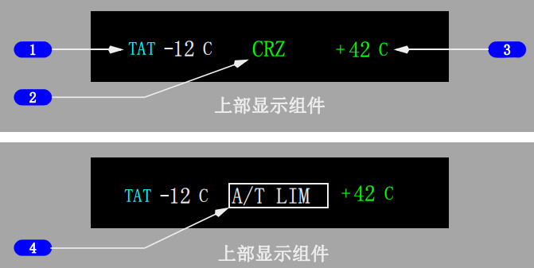
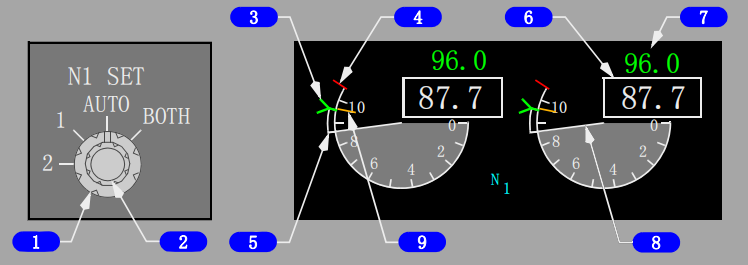
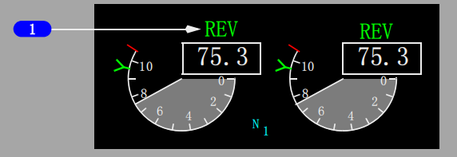
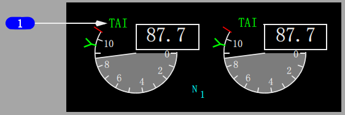
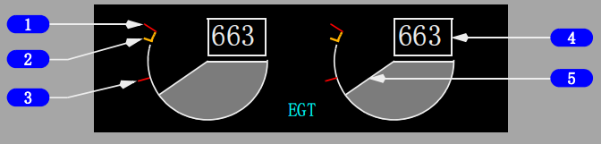
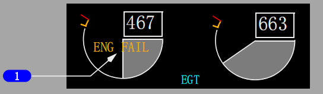
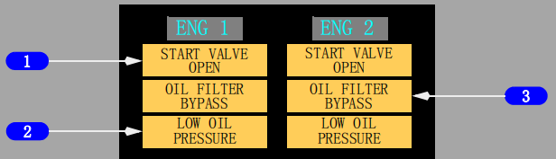

控制与指示:
返回面板
1 主要发动机指示
2 燃油油量指示
参见上方"燃油流量"链接
3 燃油流量指示

1 全温(TAT)指示
显示(符号 - 蓝绿色，温度-白色)- 全温(℃)。
2 推力方式显示
显示(绿色) - 生效的N1限制基准方式。
N1设置外圈旋钮(位于发动机显示控制面板)在AUTO位时,生效的N1限制通过基准N1游标显示。
N1设置外圈旋钮(位于发动机显示控制面板)在1、2或BOTH位(而非AUTO位)时，推力方式显示信号为MAN(人工)。
通常由FMC计算有效的N1限制。
推力方式显示信号牌有：
• R-TO - 减推力起飞
• R-CLB - 减推力爬升
• TO - 起飞
• TO B–起飞推力升级(选型)
• CLB - 爬升
• CRZ - 巡航
• G/A - 复飞
• CON - 连续
• ---- FMC未计算推力限制。
3 选择的温度
显示(绿色)- 为减推力起飞N1选定的假设温度(℃)。
重复TAKEOFF REF(起飞基准)页上所选的数据。
4 自动油门限制(A/T LIM)指示
亮(白色) - FMC不向自动油门（A/T）系统提供N1限制值。A/T使用相应的EEC所提供的降级的N1推力限制。
灯亮时，A/T LIT指示替换推力方式显示。

1 N1设置(N1 SET)外圈旋钮
自动(AUTO)-
• 根据N1限制页面和起飞基准页面由FMC调定两个基准N1游标
• 在A/T生效的N1限制上显示基准N1游标。
双位(BOTH)–
• 通过旋转N1 SET内圈旋钮人工设定两个基准N1游标和读数
• 对A/T的操作无影响。
1 或 2 -
• 通过旋转N1 SET内圈旋钮人工设定相应的基准N1游标和读数
• 对A/T的操作无影响。
2 N1设定(N1 SET)内圈旋钮(弹簧定中)
旋转 -
当N1 SET外圈旋钮在BOTH、1或2位时，调节基准N1游标和读数。
3 基准N1游标
显示(绿色) -
N1 SET外圈旋钮在AUTO、1、2或BOTH位。
位置和基准N1读数上的数值一致。
4 N1红线
显示(红色)-
N1％ RPM(转/分)操作限制
5 N1指令区
显示(白色)-
实际N1与推力手柄位置指令值之间的瞬时差值。
6 N1 RPM 读数(数字式)
显示(白色)- 正常操作范围。
显示(红色)-
• 超出操作限制
• 在地面发动机关车后，显示的红色方框表示飞行中发生过超限。
7 基准N1读数
显示（绿色）-
• 当N1 SET外圈旋钮在BOTH、1或2位时，人工设定N1% RPM
• ---- 当N1 SET外圈旋钮在AUTO位且FMC源无效时。
• 当N1 SET外圈旋钮在AUTO位时，显示空白(选型)
• 当N1 SET外圈旋钮在AUTO位时，可能指示固定减功率、假设温度减功率、或者同时显示固定和假设温度减功率。(选型)
选择反推时不显示。
8 N1 RPM指示
显示N1%RPM:
• 显示(白色)- 正常操作范围
• 显示(红色)- 超出操作限制。
9 N1最大游标(选型)
显示(琥珀色) -
• 全额定推力的N1值，
• 飞行的所有阶段，由EEC来计算。
• 自动油门操作的上限。
选择反推时不显示。
Note: R-TO 并不表明减推力起飞的类型。由于输入了一个假设温度、起飞减额定功率或同时输入了假设温度和起飞减额定功率，都可能减少N1限制。

1 反推(REV)指示
显示(琥珀色) - 反推离开收起位置。
显示(绿色) - 反推打开。

1 热防冰(TAI)指示
显示(绿色)- 整流罩防冰活门打开。
显示(琥珀色)- 整理罩防冰活门不在相应的发动机防冰电门指示位置。

1 排气温度(EGT)红线
显示(红色)-
• 最大起飞EGT限制
• 起动限制红线未显示时的最大空中起动EGT限制。
2 排气温度(EGT)琥珀色带
显示(琥珀色) -色带的下限显示最大连续EGT限制。
3 排气温度(EGT)起动限制红线
显示(红色)-
• 显示直到发动机达到稳定慢车(大约59% N2)。
• 用于EEC决定的地面起动和部分空中起动。
4 排气温度(EGT)读数(数字式)
显示(白色)-
正常操作范围(℃)
显示(琥珀色)-
• 起飞或复飞过程中颜色变化受抑制最长可达5分钟(正常操作)
• 起飞或复飞过程中颜色变化受抑制最长可达10分钟(选型)(当在最初的5分钟抑制时间内出现单发情况时)
显示(红色)- 超过最大起飞限制或起动限制
在地面，双发关车后，红色方框表示飞行中发生过超限
显示(白色-闪烁)- 在地面起动期间，EEC感应到可能导致热起动或失速的情况。
目前的EEC软件版本可在地面起动过程中即将热起动或失速时自动切断燃油。
5 排气温度(EGT)指示
显示(白色)-
正常操作范围。
显示(琥珀色)- 超过最大连续EGT限制
• 起飞或复飞过程中颜色变化受抑制最长可达5分钟(正常操作)
• 起飞或复飞过程中颜色变化受抑制最长可达10分钟(选型)(当在最初的5分钟抑制时间内出现单发情况时)
显示(红色)- 超过最大起飞限制或起动限制。

发动机失效(ENG FAIL)告警
显示(琥珀色)–
• 发动机操作低于可维持的慢车（低于50% N2）；并且
• 发动机起动手柄在慢车（IDLE）位。
告警持续，直到–
• 发动机恢复；或
• 起动手柄移至切断（CUTOFF）位；或
• 发动机灭火手柄拉起。

1 起动活门打开（START VALVE OPEN）告警
亮(琥珀色) -
• 稳定 - 相应的发动机起动活门打开且提供空气给起动机
• 闪烁 - 起动活门非指令打开。
告警显示并且实心琥珀色方框显示在该发动机的无信号显示位置。
所有三个方框闪烁10秒钟，然后告警保持稳定显示且实心琥珀色方框消失。
2 滑油压力低(LOW OIL PRESSURE)告警
亮(琥珀色) -
• 稳定 - 滑油压力处于或低于红线
• 闪烁 - 存在滑油压力低的情况。
告警显示并且实心琥珀色方框显示在该发动机的无信号显示位置。
所有三个方框闪烁10秒钟，然后告警保持稳定显示且实心琥珀色方框消失。
3 滑油滤旁通（OIL FILTER BYPASS）告警
亮(琥珀色) -
• 稳定 - 指示滑油回油滤即将旁通。
• 闪烁 - 即将旁通。
告警显示并且实心琥珀色方框显示在该发动机的非指示位置。
所有三个方框闪烁10秒钟，然后告警保持稳定显示且实心琥珀色方框消失。
Note: 在以下条件下闪烁受抑制:
• 从80海里/小时到400英尺无线电高度的起飞过程中，或到达80海里/小时30秒之后，以先出现的为准
• 低于200英尺无线电高度的着陆期间，直到接地30秒之后
• 闪烁受抑制期间，告警显示稳定亮。